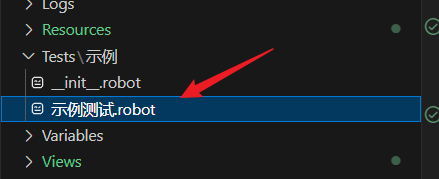
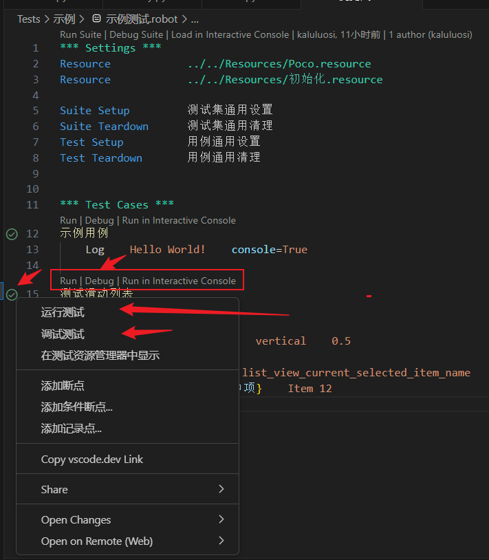
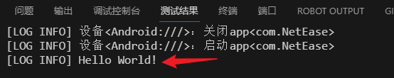
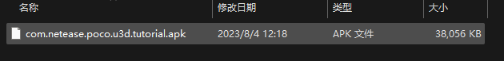
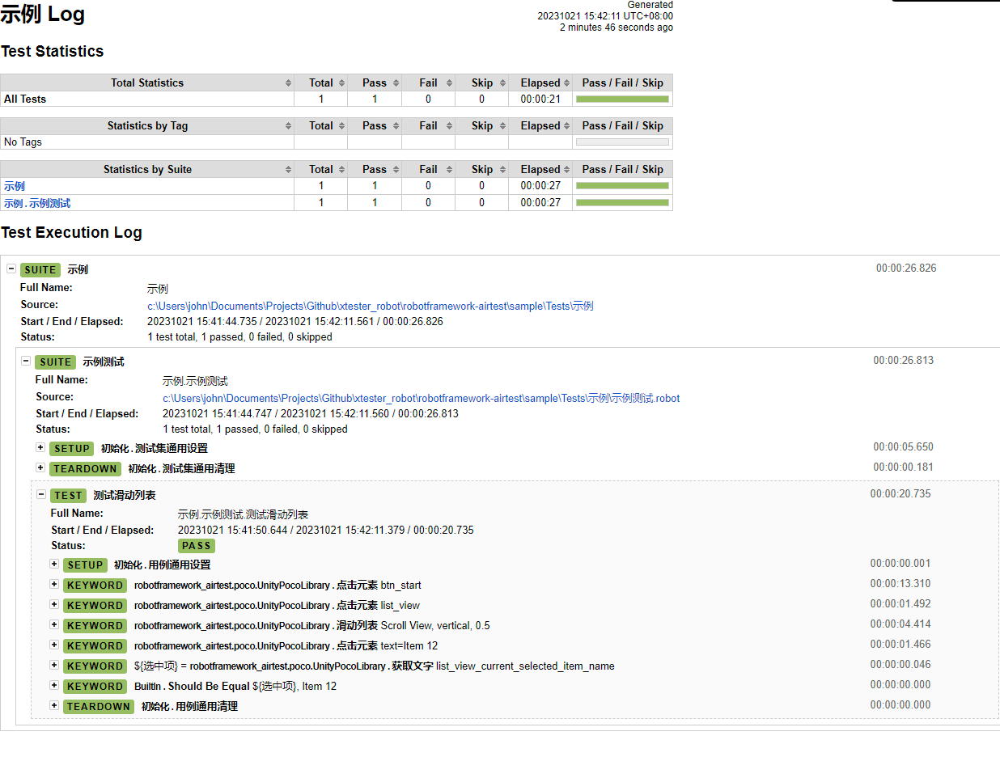
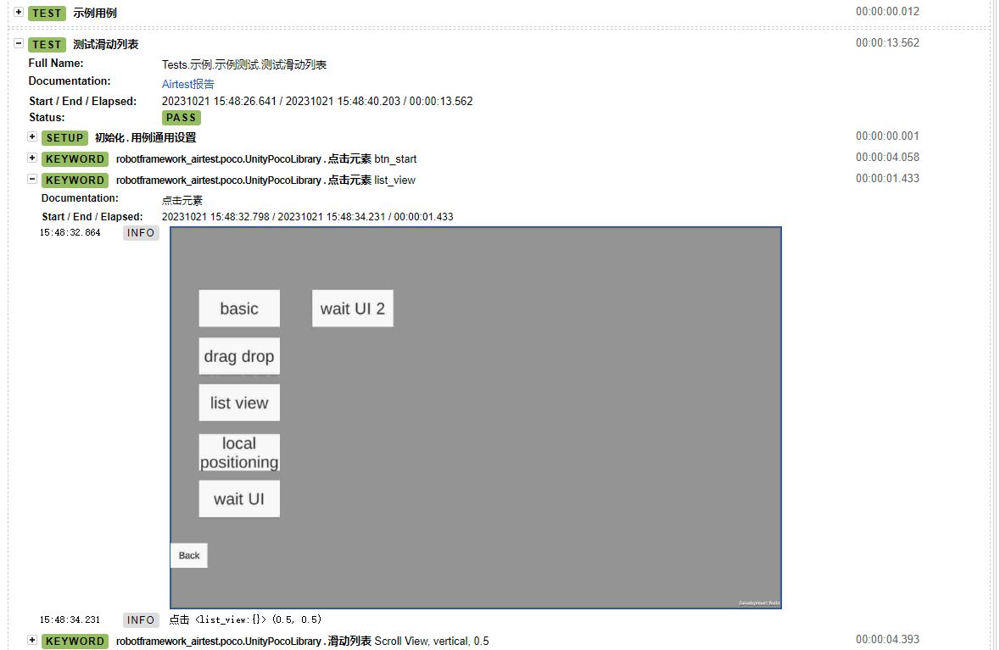
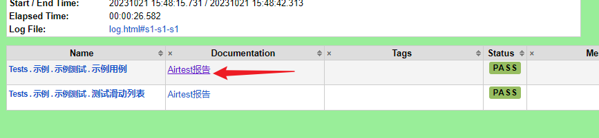

配置本地开发环境
本地调试环境设置
复制.vscode\settings.json.sample到.vscode\settings.json。
设置robot.variables。
Tip
ra 生成项目的时候已经默认设置了，你只需要按实际情况微调。
{
"robot.variables": {
"device_uri":"Windows:///?title_re=com", //PC客户端这个配置，连接windows客户端
//"device_uri":"Unity:///", // UnityEditor用这个配置，连接UnityEditor。
//"device_uri":"Android:///", // 连接安卓手机
"pkg_name":"<PC客户端exe路径>",
//"pkg_name":"" // Unity用这个配置，留空即可，Unity需要保持Unity启动，并且如果多个Unity同时运行会识别不了
"serverid":"1", // 自动登录服务器id
"auto_start_app": "True", // 自动打开游戏
"language": "zh" // 用作多语言表的切换
},
"python.envFile": "${workspaceFolder}/.env" //这个不用修改
}
Warning
设置好后要将所有注释去掉！不然调试的时候会报错。
下面分别介绍这些参数：
Tip
以下这些参数在Robot脚本中都会作为全局变量。也就是说你可以在Robot脚本里直接用${device_uri}访问到.vscode\settings.json中的这几个参数。
同理，也可以在Robot命令中覆盖这几个参数。
这样就可以做到开发环境和实际测试环境独立区分开来。
device_uri
设备连接符，用于连接控制设备。设备连接用的就是Airtest的设备连接方案，所以这块是一样的，具体可见其文档Airtest设备连接字符串怎么编写。语法：
我们在PC上调试只需要用到以下两种就可以了：
PC端
Tip
title_re 这个查询参数是 用正则表达式去匹配窗口标题。
UnityEditor因为情况比较特殊，所以特别实现了它专用连接符。
想要连接真机就要去看Airtest设备连接了解怎么写Android设备的连接字符串。
Tip
device_uri 跟 Airtest设备连接字符串 是一致的，毕竟也是基于Airtest开发的。 除了Unity额外实现了个专用的连接串。
Warning
Unity设备的连接不支持同时连两个Unity。
pkg_name
包名，不同的设备类型下有不一样的行为。
| 连接设备类型 | 值说明 |
|---|---|
| Windows | 游戏客户端的启动文件，exe或者bat |
| Unity | 空字符即可 |
| Android | APP包标志名 例如：com.xy.xyx |
| IOS | 跟Android一样包标志名 |
serverid
测试服务器id，用来供自动创角关键字使用。
Note
自动创角关键字位于Resources\辅助.resource。
auto_start_app
是否测试的时候自动打开游戏， 如果不想每次调试脚本都重启游戏可以设置为"False" 在不同的设备上有不同的表现：
| 设备 | 表现 |
|---|---|
| Windows | 运行游戏exe |
| Unity | 用Play的快捷键运行游戏，不会帮你打开Unity的，你的先开着 |
| Android | 运行游戏app |
| ios | 运行游戏app |
language
导入多语言变量文件，值对应Resources\Language目录下的文件。
由于我们测试的时候不可避免的需要一些文本变量，比如点击某个文本为"开始"的按钮，一旦多语言开发的时候这个按钮的文本就是"Start"了。我们不写死文本，而是用变量文件来管理这些文本，我们引用变量的方式，那么只需要切换不同的变量文件就可以做到文本切换。
Note
language不是必须的，是属于可选方案。
设置好后就开始我们第一个测试脚本。
运行第一个脚本
打开Tests/示例/示例测试.robot


你有多种途径可以单独运行/调试测试，随便用一种方式运行示例用例看看。

测试结果打印Hello World表示执行成功。
试一下用Poco来测试Airtest的Demo应用
首先到Apk目录将com.netease.poco.u3d.tutorial.apk安装到手机。

手机adb连接到电脑。
接着再试一下执行测试滑动列表。
==============================================================================
示例
==============================================================================
DeviceLibrary初始化 device_uri:Android:/// pkg_name:com.NetEase auto_start_app:True
示例.示例测试
==============================================================================
执行 初始化.测试集通用设置 []
执行 robotframework_airtest.device.DeviceLibrary.连接设备 []
连接设备： device_uri=Android:/// pkg_name=com.NetEase auto_start_app=True
设备<Android:///>：连接
启动APP：True
连接设备成功
执行 BuiltIn.No Operation []
测试滑动列表 PocoLibrary 设置截图目录 C:\Users\john\Documents\Projects\Github\xtester_robot\robotframework-airtest\sample\.airtest\robot_snap
执行 初始化.用例通用设置 []
执行 BuiltIn.No Operation []
.执行 robotframework_airtest.poco.UnityPocoLibrary.点击元素 ['btn_start']
创建Poco实例
尝试创建Poco...
[WinError 10054] 远程主机强迫关闭了一个现有的连接。
Poco连接失败，可能游戏还没有加载完...
尝试重新连接.... 1/10
尝试创建Poco...
[WinError 10054] 远程主机强迫关闭了一个现有的连接。
Poco连接失败，可能游戏还没有加载完...
尝试重新连接.... 2/10
尝试创建Poco...
[WinError 10053] 你的主机中的软件中止了一个已建立的连接。
Poco连接失败，可能游戏还没有加载完...
尝试重新连接.... 3/10
尝试创建Poco...
[WinError 10054] 远程主机强迫关闭了一个现有的连接。
Poco连接失败，可能游戏还没有加载完...
尝试重新连接.... 4/10
尝试创建Poco...
Poco实例创建完毕
.执行 robotframework_airtest.poco.UnityPocoLibrary.点击元素 ['list_view']
.执行 robotframework_airtest.poco.UnityPocoLibrary.滑动列表 ['Scroll View', 'vertical', '0.5']
.执行 robotframework_airtest.poco.UnityPocoLibrary.点击元素 ['text=Item 12']
.执行 robotframework_airtest.poco.UnityPocoLibrary.获取文字 ['list_view_current_selected_item_name']
.执行 BuiltIn.Should Be Equal ['${选中项}', 'Item 12']
.执行 初始化.用例通用清理 []
执行 BuiltIn.No Operation []
测试滑动列表 | PASS |
------------------------------------------------------------------------------
执行 初始化.测试集通用清理 []
执行 robotframework_airtest.device.DeviceLibrary.断开设备 []
示例.示例测试 | PASS |
1 test, 1 passed, 0 failed
==============================================================================
示例 | PASS |
1 test, 1 passed, 0 failed
==============================================================================
Output: C:\Users\...\robotframework-airtest\sample\output.xml
Log: C:\Users\...\robotframework-airtest\sample\log.html
Report: C:\Users\...\robotframework-airtest\sample\report.html
最后三行是测试日志和报告，你可以点开 C:\Users\...\robotframework-airtest\sample\report.html 来看看生成的测试报告。

每个操作都有截图 
用命令行来执行测试
将来自动化测试终归是要集成到CI\CD里执行，我们需要用命令行来执行所有测试而不是在VSCode里执行。
本地执行
本地执行所有测试可以使用根目录的run.bat。
命令执行
Tip
-A Args/run.args 其实是读取run.args文件里的命令行参数作用到robot命令中。这样做可以将常用的参数组合放到一个文件里编辑管理，缩短命令长度。
如果不用这种方式那么就像下面：
Note
--listener robotframework_airtest.reporter.AirtestReporter:True 的作用是生成Airtest报告并嵌入到Robot Framework的报告中去。

点击Airtest报告会跳转到Airtest原生报告页面。
VSCode中调试Robot用例不会添加这个参数，所以调试生成的报告没有Airtest报告。
CD\CD Jenkins上执行
采用命令执行
robot -A Args/run.args --variable device_uri:$DEVICE_URI --variable pkg_name:$PKG_NAME --variable language:$LANG Tests
Note
上面的$变量是Jenkins的Job编辑传入的，通过--variable参数来覆盖run.args里的值。